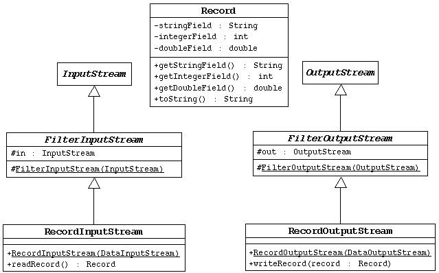

SL275: Module15: Advanced I/O Streams
Exercise #2: Implement the Record Processing Streams
(Level 2)
Objective
In this exercise you will write the RecordInputStream and
RecordOutputStream filter stream classes based on a particular
Record class.
Directions

Write the Record Class
- Implement the Record class as designed in the UML diagram, above.
- Write a toString method that constructs a String that
includes all three fields. See the output at the bottom of this page
to see how to format the string.
Write the RecordOutputStream Class
- Implement the RecordOutputStream class as designed in the UML diagram, above.
- The constructor must pass the data output stream object to the super
class constructor (which accepts an output stream object).
- The writeRecord method should use the inherited out
attribute.
Write the RecordInputStream Class
- Implement the RecordInputStream class as designed in the UML diagram, above.
- The constructor must pass the data input stream object to the super
class constructor (which accepts an input stream object).
- The readRecord method should use the inherited in
attribute.
Complete the WriteRecords Program
This program creates five records and writes them to the file: record.db
In the WriteRecord.java file you will find comment blocks
that start and end with /*** ... ***/. These comments indicate
the location in the code that you must supply.
- Edit the WriteRecords class file to include the code
to declare and initialize the record output stream variable. Name the
file containing the records: record.db.
- Add the code to write the five records to the record output stream.
Don't forget to close the top-level stream.
- Compile and run this program. You will see the following output.
Also, the file record.db should now exist.
Five records have been saved to the 'record.db' file.
Complete the ReadRecords Program
This program assumes that five records have been written to the file: record.db
This program will read the five records and print them out.
In the ReadRecord.java file you will find comment blocks
that start and end with /*** ... ***/. These comments indicate
the location in the code that you must supply.
- Edit the ReadRecords class file to include the code
to declare and initialize the record input stream variable.
- Add the code to read the five records from the record output stream
and print out the record object to standard out.
Don't forget to close the top-level stream.
- Compile and run this program. You should see the following output.
Record['record #1', 2, 1.4142135623730951]
Record['record #2', 3, 2.718281828459045]
Record['record #3', 5, 3.141592653589793]
Record['record #4', 7, 4.0]
Record['record #5', 9, 5.859874482048838]